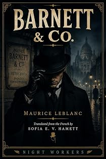

L'Agence Barnett et Cie
The lost Arsène Lupin casebook — eight stories
by Maurice Leblanc · translated by Sofia E. V. Hamettpar Maurice Leblanc · traduit par Sofia E. V. Hamett
The bookLe livre
A card is sent up to the Baroness Assermann in the Faubourg Saint-Germain: "Barnett & Co. Information free of charge." Free is the joke. Jim Barnett takes no fee and never leaves a house without something in his pocket, and Inspector Béchoux keeps hiring him anyway because Barnett solves everything. Eight stories, and one of Leblanc's best ideas: Lupin as a consultant.
On monte une carte à la baronne Assermann, au faubourg Saint-Germain : « Agence Barnett et Cie. Renseignements gratuits. » Gratuit est la plaisanterie. Jim Barnett ne prend pas d'honoraires et ne quitte jamais une maison sans quelque chose dans sa poche, et l'inspecteur Béchoux continue de l'employer parce que Barnett résout tout. Huit nouvelles, et l'une des meilleures idées de Leblanc : Lupin en consultant.
From the opening pagesLes premières pages
The courtyard bell rang at the foot of the great house the Baroness Assermann kept in the Faubourg Saint-Germain. The maid appeared almost at once with an envelope on a tray.
"There's a gentleman downstairs, madam. He says you asked him to come at four."
Mrs Assermann slit the envelope open and read the words printed on a card inside.
Barnett & Co. Information free of charge.
"Show him up to my sitting room."
Valérie — the beautiful Valérie, as she had been called for more than thirty years now, alas — was a thickset, well-ripened woman, expensively dressed, meticulously made up, and still laying claim to a great deal. Her face expressed pride, sometimes hardness, and often a certain guilelessness that was not without charm. As the wife of Assermann the banker she took her vanity from her luxury, her connections, her house, and in a general way from everything that had to do with her. The society columns held one or two faintly scandalous affairs against her. It was even said that her husband had wanted a divorce.
First she looked in on Baron Assermann. He was an old man in poor health, kept to his bed for weeks by a series of heart attacks. She asked how he was feeling and, absently, straightened the pillows behind his back. He murmured:
"Wasn't that the bell?"
"Yes," she said. "It's the detective who was recommended to me for our business. Quite a remarkable man, apparently."
"Good," said the banker. "The whole thing worries me. I've turned it over and over and I can't make any sense of it."
Valérie, who looked no less troubled, left the room and went to her sitting room. She found a strange individual waiting there: well proportioned, square in the shoulders, solid-looking, but dressed in a black frock coat — or rather a greenish one — whose cloth had the shine of umbrella silk. The face was young, forceful, roughly carved, and spoiled by a coarse, raw, brick-red skin. Behind a monocle that he wore in either eye without seeming to care which, his cold, mocking eyes were bright with a boyish good humour.
"Mr Barnett?" she said.
He bent over her and, before she had time to withdraw her hand, kissed it, with a rounded flourish followed by a barely audible click of the tongue, as though he were tasting the perfume on her skin.
"Jim Barnett, at your service, Baroness. I had your letter, and as soon as I'd given my coat a brush —"
She was too taken aback to throw the intruder out. He faced her with all the ease of a great gentleman who knows the entire code of polite society, and the best she could manage was:
"I'm told you have a talent for untangling complicated affairs."
He smiled, well pleased with himself.
"It's more of a gift, really. The gift of seeing clearly and understanding."
The voice was soft, the tone imperious, and the whole manner kept a note of quiet irony, of light mockery. He seemed so certain of himself and of his abilities that it was impossible not to be carried along by his certainty, and Valérie felt at once that she had fallen under the influence of this stranger — a common private detective, the head of a private agency. Wanting some small revenge, she suggested:
"Perhaps we ought to settle the terms between us first."
"Completely unnecessary," said Barnett.
"All the same" — and now it was her turn to smile — "you don't work for the glory of it?"
"The Barnett Agency is entirely free of charge, Baroness."
She seemed put out.
"I'd have preferred an arrangement that allowed for something. A fee. A reward."
"A tip," he said with a snicker.
She persisted.
"I really can't —"
"Be in my debt? A pretty woman is never in anybody's debt."
And immediately, no doubt to take the edge off his own boldness, he added:
"In any case, don't worry, Baroness. Whatever services I may be able to do you, I'll see to it that we come out entirely square."
What was that supposed to mean? Did the man intend to pay himself? And in what currency?
Valérie felt a shiver of embarrassment and coloured. Mr Barnett really did stir something uneasy in her, not far from what one feels in the presence of a burglar. She was also thinking — heaven help her, yes — that she might be dealing with an admirer who had found this original way of getting into her house. But how was she to know? And in any case, how was she to react? She felt intimidated, overruled, and at the same time oddly trusting, quite ready to give in to whatever came next. So when the detective asked her what had made her call in the Barnett Agency, she spoke without evasion and without preamble, exactly as he required her to. The account did not take long. Mr Barnett seemed to be in a hurry.
"It was the Sunday before last," she said. "I'd had a few friends in for bridge. I went to bed reasonably early and fell asleep as usual. Around four — ten past four, to be exact — a noise woke me, and then there was a second one that sounded to me like a door closing. It came from my sitting room."
"Meaning this room?" Mr Barnett interrupted.
"Yes. This room adjoins my bedroom on one side" — Mr Barnett bowed respectfully in the direction of the bedroom — "and on the other side the corridor that leads to the service stairs. I'm not a nervous woman. I waited a moment, then I got up."
Another bow from Mr Barnett, this time to the vision of the Baroness springing out of bed.
"So you got up?" he said.
"I got up, I went in and I turned on the light. There was nobody there, but that little display cabinet had gone over with everything in it — ornaments, statuettes — and several of them were broken. I went through to my husband, who was reading in bed. He'd heard nothing. He was very alarmed and rang for the butler, who started searching straight away; and first thing in the morning the police superintendent took over."
"And the result?" asked Mr Barnett.
"This. As to how the man arrived and how he left, not a trace. How did he get in? How did he get out? A mystery. But under a footstool, among the broken ornaments, they found half a candle and an awl with a filthy wooden handle. And we knew that in the middle of the previous afternoon a plumber had been in to repair the taps on my husband's washstand, in his dressing room. They questioned his employer, who recognised the tool — and at the workshop they found the other half of the candle."
"So on that side, a certainty," Jim Barnett cut in.
"Yes, but a certainty contradicted by another one just as solid, and genuinely baffling. The investigation proved that the workman had caught the six o'clock express to Brussels and arrived there at midnight. Three hours before the incident."
The excerpt ends here — about 1,204 words of the published edition.L'extrait s'arrête ici — environ 1,204 mots de l’édition parue.
KindlePaperbackBrochéContextContexte
Everyone in English knows The Hollow Needle and 813. Almost nobody has read Barnett & Co., The Mélamare House, La Barre-y-va or The Girl with the Green Eyes — the later Lupin books that never entered the English canon, or entered it once and fell out. There is a symmetry the house enjoys here: Leblanc built Lupin out of newspaper reports on Alexandre Marius Jacob, whose memoirs gave Night Workers its name.
Tout le monde connaît en anglais L'Aiguille creuse et 813. Presque personne n'a lu L'Agence Barnett et Cie, La Demeure mystérieuse, La Barre-y-va ou La Demoiselle aux yeux verts — les Lupin tardifs qui ne sont jamais entrés dans le canon anglais, ou qui en sont sortis. Il y a là une symétrie qui plaît à la maison : Leblanc a bâti Lupin à partir des comptes rendus de presse sur Alexandre Marius Jacob, dont les mémoires ont donné son nom à Night Workers.
The whole programmeTout le programme